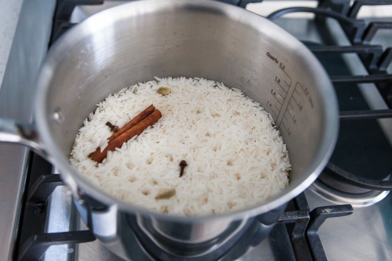
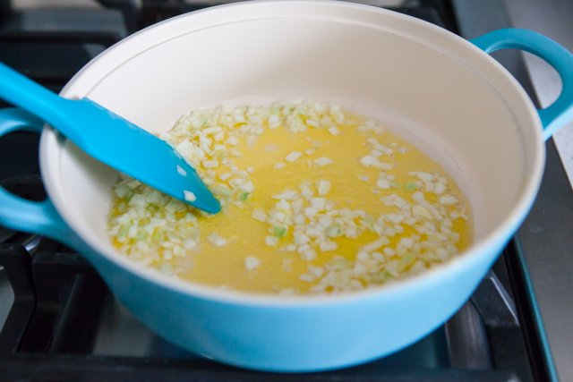
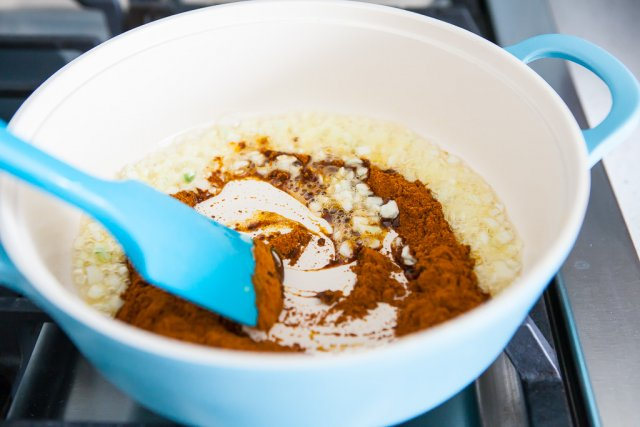
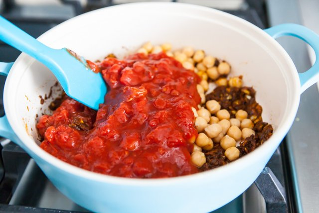
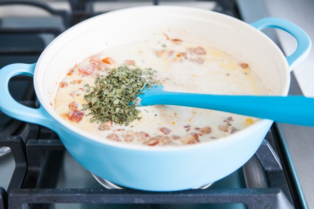
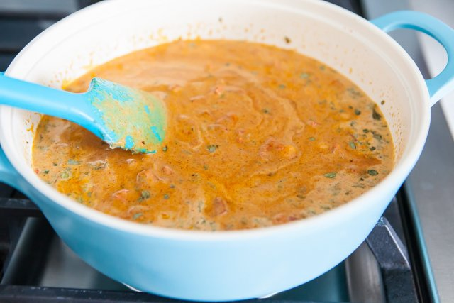
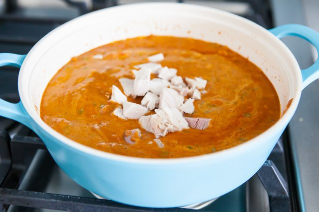
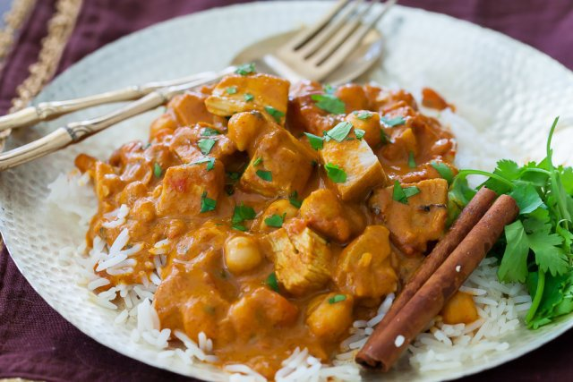

This Turkey Tikka Masala recipe features:
- Great way to use leftover turkey for an Indian inspired dish
- This warm spiced dish ensures your turkey doesn’t just taste like Thanksgiving leftovers!
- 30 minutes total time
The problem with most leftover turkey dishes is that the resulting dish still tastes like Thanksgiving dinner. We like to feature international recipes that can utilize the containers full of leftover turkey in the refrigerator, using flavorful spices.
In fact, this same recipe can be used with leftover chicken (like rotisserie chicken) or leftover grilled shrimp. We’ve even threw in already-cooked cocktail shrimp for a delicious meal.
We adapted the recipe from Takeout Kit, an innovative meal delivery service that specializes in pantry-friendly meal kits. We’ll be doing a full review on their product very soon. Their kit includes everything you need to cook this dish, except for the leftover turkey!
All the ingredients in this recipe can be found in most large supermarket chains, which makes this Turkey Tikka Masala recipe so friendly for anyone to try.
Turkey talk!
All week long, we’ve been creating and testing “leftover turkey recipes.” Rather than cook a turkey from scratch…and then having to cook another one for Thanksgiving dinner, we received a whole, already-roasted turkey from Diestel Ranch (you can find their turkeys at Whole Foods or purchase them online). Diestel Family Turkey Ranch is a fourth-generation family company – they’ve been raising turkeys humanely and sustainably since 1949 at their farm in the Sierra Nevada foothills near Yosemite. If you want to see how their turkeys are raised, watch their video – which is halfway down this page. They sell uncooked whole turkey, turkey sausage, uncured turkey breast, smoked whole turkey, and more. We wanted to thank Diestel family for sending us a perfectly roasted bird for our recipe testing!
How to Make Leftover Turkey Tikka Masala
Start with making the basmati rice. Adding spices, like the cinnamon stick, whole cloves and whole cardamom is optional – but it really does enhance the flavor of the rice.
Throw in the rice, spices, salt into a saucepan. Add water, bring to boil. Cover and reduce heat to low. Cook 15 minutes, turn off heat. Leave it alone for 5 minutes. Remove spices.
The Tikka Masala comes together really quickly, so while the rice is simmering away, make the Tikka Masala.
Sauté onion and garlic in butter or ghee.
Add in the Tikka Masala seasoning, salt, sugar.
Crushed tomatoes, garbanzo beans.
Coconut milk and dried fenugreek leaves (totally optional)
Simmer for a bit.
Last step is to stir in diced leftover turkey.
Serve over rice.
